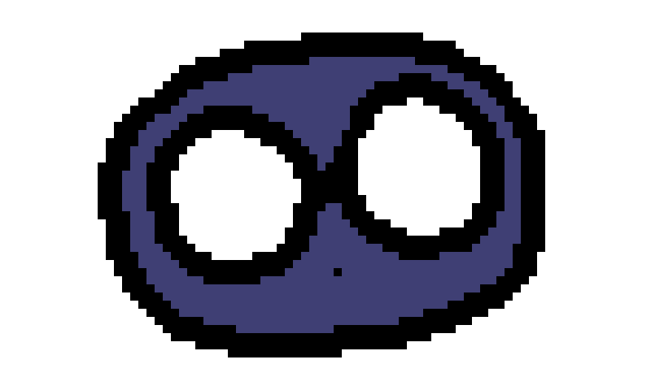
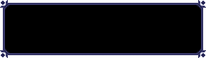

Dialogue & voices
Interactive Dialogue Demo

Vex

Press Z to start
or click / tap here
Z continue
Choose a portrait to see it react and hear its voice.

Vex

Press Z to start
or click / tap here
Z continue
Choose a portrait to see it react and hear its voice.